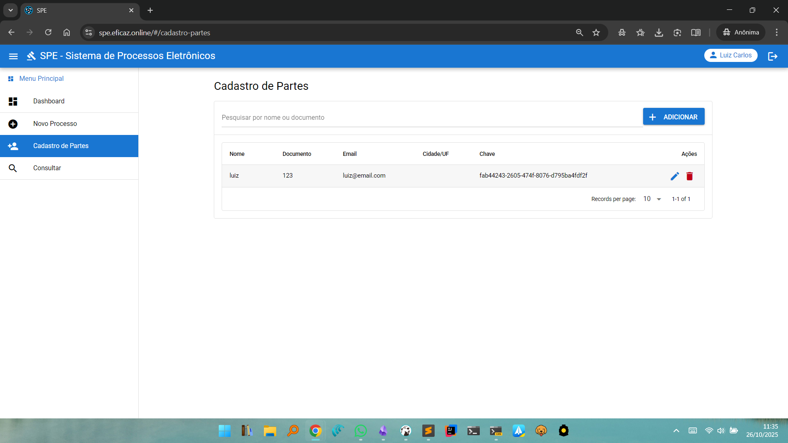
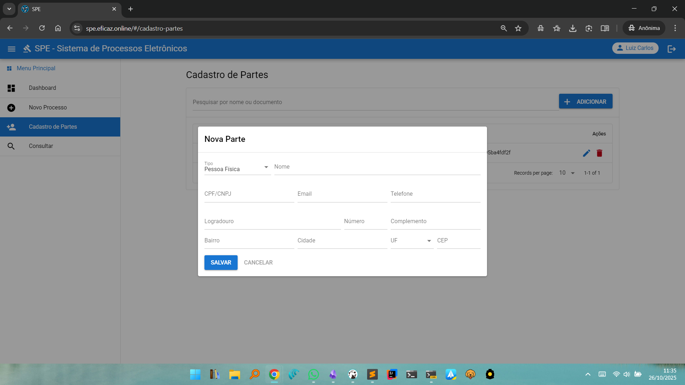

Cadastro de Partes
O menu Cadastro de Partes permite ao usuário cadastrar, consultar, editar e remover pessoas físicas ou jurídicas que poderão ser vinculadas como partes em processos eletrônicos. Este cadastro garante padronização, evita duplicidade de registros e facilita a vinculação de partes em novos processos.
Estrutura da Tela de Cadastro de Partes
Lista de Partes Cadastradas

- Exibe uma tabela com as partes já cadastradas, apresentando as colunas:
- Nome
- Documento (CPF, CNPJ, etc.)
- E-mail
- Cidade/UF
- Chave (identificador único)
- Ações (editar, remover)
- Campo de busca permite filtrar por nome ou documento.
- Seletor para quantidade de registros exibidos por página.
Adicionar Nova Parte

- Botão Adicionar abre um formulário para cadastrar uma nova parte.
- O formulário de cadastro inclui os seguintes campos:
- Tipo de parte (Pessoa Física ou Jurídica)
- Nome
- Documento (CPF/CNPJ)
- E-mail
- Telefone
- Endereço (logradouro, número, complemento, bairro, cidade, UF, CEP)
- Botões para Salvar ou Cancelar o cadastro.
- Editar e Remover
- Ícone de lápis permite editar os dados de uma parte já existente.
- Ícone de lixeira permite excluir uma parte do cadastro, removendo-a da base do sistema.
Fluxo de Utilização
- Para cadastrar uma nova parte, clique em Adicionar e preencha o formulário com os dados completos.
- Para consultar, utilize o campo de busca para localizar rapidamente uma parte já cadastrada.
- Utilize os ícones apropriados para atualizar informações ou remover registros desnecessários.
Observações
- Recomenda-se sempre verificar se a parte já está cadastrada antes de adicionar um novo registro, prevenindo duplicidade.
- Todas as partes cadastradas ficarão disponíveis para seleção durante a criação de novos processos e outras operações do sistema.
Voltar